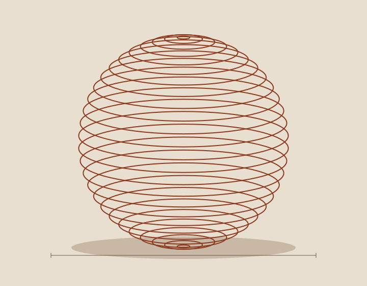
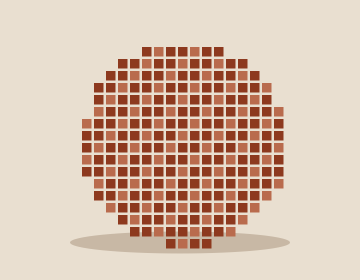

Computer vision
How does an image become an understanding?
Explore the relationship between visual signals, representations and interpretation.
Computer Vision & Intelligent Systems Research Lab
A place to explore the questions between images and intelligence.


Research / An introduction
Themes drawn from the legacy site.
Questions are proposed editorial copy.
How does an image become an understanding?
Explore the relationship between visual signals, representations and interpretation.
What can we learn by looking more closely?
Discover research concerned with making structure in complex images easier to interpret.
What lies beyond a single viewpoint?
Consider depth, reconstruction and the relationship between physical and digital space.
Research questions and headlines are proposed editorial copy. They are not claims of specific results. Legacy topic source ↗
Publication presentation / One sourced specimen
Legacy title; bibliography awaiting verification
People / Component study
A clear place for the people, perspectives and collaboration behind the work.
Profile layout specimen
Name, role and affiliation will appear only after verification. No person is represented by this specimen.
Join / Collaborate
Make the next step clear, whether you are beginning your research or looking to collaborate.
This design prototype does not accept applications. The existing site's application route remains unchanged.
View existing Join Us pageRequired application workflows must be confirmed with the lab and preserved through an approved continuation or migration plan. Online collection in the replacement stays blocked until its owner, destination, privacy notice and retention policy are authorized.
This is not an announcement that CVIS applications are closed. Do not enter personal information into design review artifacts.
System fonts only. No third-party imagery, logos, trackers, web fonts or libraries. These specimens are not the production website.